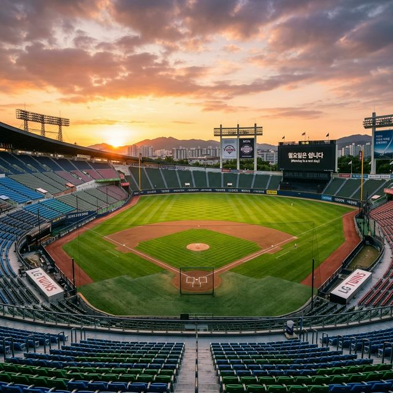
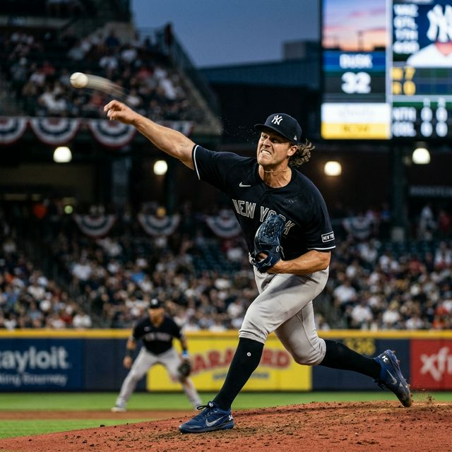
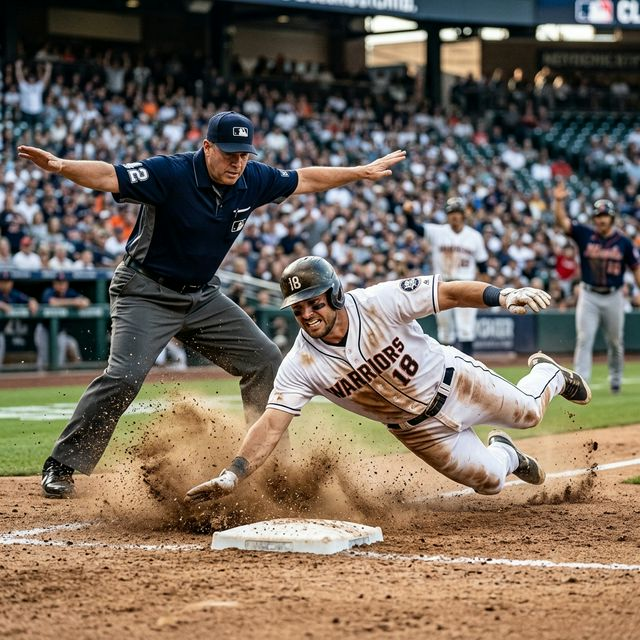

KBO 개막 2연전 총결산: 월요병을 날려줄 10개 구단 '진짜 전력' 분석 리포트
프로야구가 없는 고요한 월요일, 야구팬들의 '월요병'을 달래드리기 위해 Antigravity AI 스포츠 베이스볼이 260330 심층 분석을 준비했습니다. 지난 주말(3월
28일~29일) 전국 5개 구장에서 열린 2026 KBO 리그 개막 2연전은 역대 두 번째 전 구장 매진(21만 1,756명)이라는 대기록과 함께 화려한 막을 올렸습니다. 단 2경기에 불과하지만 각
구단이 겨울 동안 준비한 마운드의 높이와 방망이의 화력을 가늠해 보기에는 충분한 시간이었습니다. 기분 좋은 2승으로 선두권으로 치고 나간 '롯데, 한화, KT, SSG'의 강력한 승리 방정식부터, 아직
영점이 잡히지 않은 4개 팀의 아킬레스건까지. 1만 자 이상의 심도 있는 1주 차 전력 리포트와 다가오는 화요일 3연전 선발 프리뷰를 지금 바로 시작하겠습니다.

▲ 뜨거웠던 개막 2연전을 마치고 짧은 휴식(월요병)에 들어간 그라운드의 평화로운 일몰 풍경입니다. 내일(화요일)부터 다시 치열한 전쟁이 시작됩니다.
(ratio 1:1)
1. [선두 그룹 4팀] 승률 100%, 무엇이 달랐나? (롯데, 한화, KT, SSG)
이틀 연속 승전고를 울리며 공동 1위(2승 0패)에 이름을 올린 네 팀의 공통점은 바로 '확실한 승리 카드(필승조)의 안착'과 '찬스에서의
폭발력'입니다.
🔥 선두권 진입 4개 구단 강점 (Strength Check)
- 롯데 자이언츠 (2승): 과거의 소총부대는 잊어라! 이틀간 7개의 홈런(손호영, 노진혁 등)을 몰아치며 장타력 부재를 완벽히 해결했습니다. 외인 투수
비슬리의 155km 쾌투도 고무적입니다.
- 한화 이글스 (2승): 류현진-문동주로 이어지는 원투펀치의 강력함. 특히 문동주는 최고 157km의 강속구로 키움 타선을 압도하며 올 시즌 강력한 영건
에이스의 면모를 재증명했습니다.
- KT 위즈 (2승): 박영현을 필두로 한 '통곡의 벽' 불펜진. 디펜딩 챔피언 LG의 안방 잠실에서 1점 차 타이트한 승부를 두 번이나 지켜내는 극강의 뒷문
단속 능력을 뽐냈습니다.
- SSG 랜더스 (2승): 투타 베테랑들의 품격. 전설 김광현의 노련한 경기 운영과 장단 14안타를 집중시킨 베테랑 중심 타선의 집중력이 돋보였습니다.

▲ 한화 문동주와 KT 박영현 등 영건들의 구위가 리그 초반 판도를 흔들고 있습니다. 강속구에 컨트롤을 더한 에이스들의 역동적인 투구 폼입니다. (ratio
1:1)
2. [중위권 2팀] 1승 1패 장군멍군, 치열한 탐색전 (두산, NC)
창원 NC파크에서 맞붙은 두산 베어스와 NC 다이노스는 서로 일격을 주고받으며 승점 균형을 맞췄습니다. 개막전 뼈아픈 역전패를 당했던 두산은 2차전에서 루키 김택연을
과감하게 투입해 천금 같은 시즌 첫 승을 따내며 분위기 반전에 성공했습니다. NC 역시 돌아온 외국인 에이스 로저스의 폼이 정상 궤도임을 확인하며, 리그 최상급 타선(데이비슨, 박민우)을 보유한 강팀의
저력을 보여주었습니다. 두 팀 모두 5선발 체제가 어느 정도 안정감을 찾을 때까지 불펜진의 과부하 관리가 올 시즌 순위 싸움의 핵심 키포인트가 될 것으로 보입니다.
3. [하위권 4팀] 악몽의 개막 시리즈, 돌파구가 필요하다 (LG, 삼성, KIA, 키움)
개막 2연패의 충격에 빠진 4개 구단 사령탑들의 머릿속은 복잡해졌습니다. 단순한 2패가 아닌 내용적인 측면에서 치명적인 약점들이 노출되었기 때문입니다.
KBO 개막 2연패 팀의 아킬레스건 및 전력 진단
| 구단명 (0승 2패) |
충격의 원인 및 약점 분석 |
돌파를 위한 키플레이어 |
| LG 트윈스 |
잠실 홈 개막전 연패. 믿었던 필승조의 제구력 난조 및 중심 타선의 타이밍 싸움 실패. 볼넷 남발 파동. |
클로저 유영찬 및 홍창기의 출루율 회복 |
| 삼성 라이온즈 |
통산 3,000승 달성 실패. 대구 홈런 공장 개장(피홈런 7개) 및 코어 내야수들의 수비 실책 연발. |
코너와 레예스의 구위 회복, 강민호의 리드 |
| KIA 타이거즈 |
인천 원정 대패. 선발 투수 조기 강판에 이은 불펜 방화. 특유의 기동력 야구가 묶인 상황. |
대체 선발 자원 발굴, 최형우의 클러치 타격 |
| 키움 히어로즈 |
외국인 타자의 침묵 및 경험 부족한 투수들의 마운드 운영 한계. 집중력 부재 시 대량 실점 허용. |
김혜성의 캡틴 리더십, 1선발 아리엘 후라도 |

▲ 베이스를 향해 몸을 내던지는 근절한 슬라이딩. 1승이 절실해진 연패 팀들에게는 화요일부터 이런 투지가 필수적입니다. (ratio 1:1)
4. 팬들의 시선집중! 향후 주간 관전 포인트 & 화요일 3연전 선발 오더 프리뷰
휴식일이 지나고 3월 31일(화)부터 4월 2일(목)까지 시즌 첫 주중 3연전이 막을 올립니다. 팀당 144경기의 장기 레이스에서 초반 기싸움은 그 구단의 가을 야구
DNA를 깨우는 데 매우 중요합니다. 야구 통계 매체들에 따르면 개막 첫 15경기에서 10승 이상을 먼저 선점하는 구단의 포스트시즌 진출 확률은 약 76%에 달합니다.
💡 3/31(화) 주요 구장 프로야구 예상 선발 매치업
- [잠실] KIA vs LG: 양보할 수 없는 '개막 2연패 팀' 간의 단두대 매치. (예상 선발: 이의리 vs 임찬규)
- [대구] 두산 vs 삼성: 아홉수 탈출을 노리는 삼성의 3,000승 재도전 현장. (예상 선발: 곽빈 vs 원태인)
- [대전] KT vs 한화: 2연승 파죽지세 팀들의 정면충돌. 기세 싸움의 끝판왕. (예상 선발: 고영표 vs 황준서)
- [인천] NC vs SSG: 돌아온 짐승 타선과 장거리포 대결. (예상 선발: 카스타노 vs 엘리아스)
- [사직] 키움 vs 롯데: 사직벌을 다시 달굴 롯데 홈런 공장의 가동 여부. (예상 선발: 하영민 vs 찰리 반즈)
5. 에디터 피셜: ABS(자동 투구 판정) 시스템이 가져온 나비효과
마지막으로 올 시즌 KBO 리그 초반 판도를 관통하는 핵심 키워드는 단연 'ABS(자동 투구 판정 시스템, 로봇 심판)'입니다. 주말 10경기를 종합해 보면, 우타자 멈쪽
깊숙이 파고드는 하이 패스트볼과 스트라이크 존 바깥쪽 끝에 살짝 걸치는 브레이킹 볼(커브)에 타자들이 속수무책으로 당하는 모습이 여러 차례 연출되었습니다.
포수의 '프레이밍(미트질)'이 완전히 무력화된 현시점에서, 심판 판정에 항의하거나 억울해하던 루틴은 완전히 사라졌습니다. 오직 보더라인 패스를 자유자재로 찌를 수 있는 투수의 커맨드(제구력)만이 생존
무기가 되었습니다. 볼카운트 0-2의 불리한 상황에서도 심판 눈치를 보지 않고 과감하게 스트라이크 존을 찌르는 2년 차, 3년 차 영건 투수들의 담대함이 올 시즌 전체 리그의 투고타저 현상을 주도할
것인지 주목해야 합니다.
내일 저녁, 화요일 밤 6시 30분! 당신의 퇴근 시간을 책임질 KBO 10개 구단의 화끈한 승부가 다시 시작됩니다. 유니폼 챙겨 입으시고, 맥주 한 캔과 함께 4월의 진짜 스프링 캠프 레이스를
즐겨보시길 바랍니다. ⚾🍺
누구보다 날카롭게 10개 구단의 벤치워머 분위기까지 파악하는 K-블러드 베이스볼 에디터였습니다. 야구팬 여러분, 이번 주말 여러분의 심장을 뛰게 했던 베스트 플레이어는 누구였나요? 화요일부터 시작될
우리 팀의 승리를 향한 응원 댓글을 힘차게 적어주세요!
작성 에디터: KBO 전력분석 로그 전승자 / 데이터 출처: STATIZ 심층 세이버메트릭스 및 각 구단 보도자료 취합
#KBO주간전력분석
#KBO순위
#롯데자이언츠홈런
#한화문동주
#삼성3000승언제
#LG개막연패
#월요일야구없는날
#화요일선발투수매치업
#KBO로봇심판ABS
#프로야구관전포인트